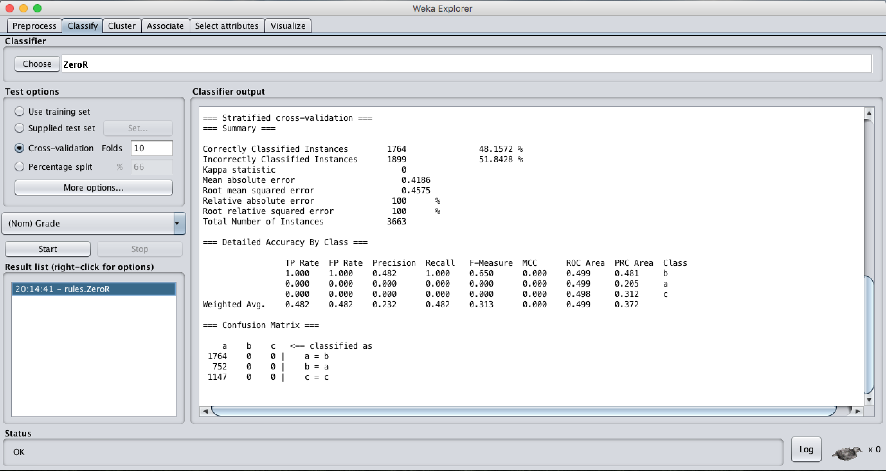

Final Report
Setup
The dataset used is in 2009 from United national Center for Education Statistics (NCES). There are in total 5233 samples. We used the following 23 features to construct the model for the dataset:- Grade
- Gender
- Race
- Place of Birth
- Education level of father
- Education level of mother
- Whether father has full-time or part-time work
- Whether mother has full-time or part-time work
- Father's place of birth
- Mother's place of birth
- Whether father attended high school
- Whether mother attended high school
- Whether English is spoken at home as a primary language
- Whether the student attended preschool
- Whether the student expects to obtain a bachelor’s degree
- Whether the student attends a public school
- Whether the student’s school owns a library
- The number of students in the student’s school
- Whether the student has access to a computer for schoolwork
- Whether the school is in the urban area
- Number of minutes per week the student spends in English class
- The number of students in this student’s English class at school
- Whether the student reads for pleasure for 30 minutes per day
Initial Approach
Originally, we used 4733 for training and 500 for testing. We decided to build a linear regression model to evaluate reading test scores based on the 23 features.We wrote our own code to perform the lienar regression and also an error function test out the error of the model. We reached a result where the final score has, on average, about 15% away from the actual score. This does not necessarily give us reliable results and insight into how students with different background and differences could be different.
New Approach
We then decided to train and test our model based on Weka and transform the problem into a classification of letter grade of A, B, or C based on the range or scores so that we will be able to get results using different classifiers:The student will be graded C if the score is less than 450;
The student will be graded B if the score is between 450 and 580;
The student will be graded A if the score is greater than or equal to 500.
Before we run out dataset on Weka, we also normalized all the attribute values to be between 0 and 1. Additionally, any nominal or categorical attributes are converted into binary
Results
We ran our model through Weka and we used ZeroR as our benchmark to evaluate other classifiers. Any missing value of a sample is filled with the mean value of that attribute:
Consequently, we ran our model on 5 classifiers to perform 10-fold cross-validation on the training set and the test set:
| Classifier | Correctly Classified Instances(10-fold Cross-validation) | Correctly Classified Instances(supplied test set) |
|---|---|---|
| Naive Bayes | 50.0683% | 48.9172% |
| Logistic Regression | 56.8933% | 53.758% |
| Multilayer Perceptron | 54.1906% | 50.2548% |
| K-nearest Neighbor(IBk) | 45.6456% | 47.1338% |
| Decision Tree(J48) | 50.2867% | 50.828% |
Consequent Testing
In addition, we also did additional data processing.- We tried to do feature selection, where we deleted some features, in our case whether father and mother went to high school.
Similarly, we did not achieve any apparent results. - We also tried to handle missing attributes differently. Rather than using median for any value of a sample that is 'NA', we decided to delete any sample that has attributes of missing values.
This handling skewed our model because the samples with missing values are concentrated around those with low reading scores. Therefore, the general distribution was heavily affected and the results were thusly compromised. Here are the results:
We then tried to replace the 'NA' values with mean of each attribute and that did not achieve any apparent improvement in the model either.Classifier Correctly Classified Instances(10-fold Cross-validation) Correctly Classified Instances(supplied test set) Naive Bayes 47.3488% 47.9798% Logistic Regression 50.2017% 44.8485% Multilayer Perceptron 45.7746% 46.3636% K-nearest Neighbor(IBk) 42.6263% 41.9192% Decision Tree(J48) 46.5617% 45.7576%
Conclusion
In conclusion, we do find that there is a weak relationship between all the attributes provided in the dataset and the final reading score despit the fact that qualitatively, we would assume a strong correlation. Performing feature selection could also be potentially a good approach into reducing the effect of overfitting and irrelevant variables.Additionally, we do think that using potentially other attributes could be beneficial to finding the correlation between the student's background and their reading score performances. Attributes such as nationality, the students' score in science and mathematics, as well as the difficulty of the curriculum could potentially play a more direct role in predicting the student's reading test score.